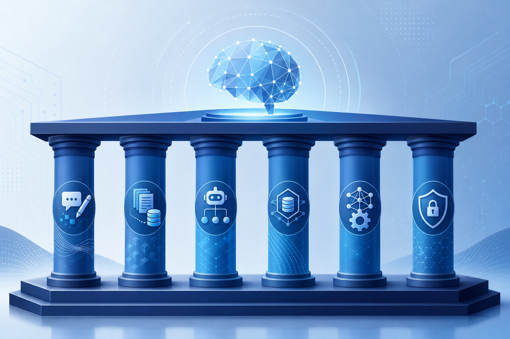

朱少民 · 王千祥 · 读书要点 · 整理日期：2026年06月
本书系统梳理软件工程从 1.0 → 2.0 → 3.0 的演进，提出以大模型为核心驱动力的研发新范式。核心论断是：AI 不再只是「辅助工具」，而是改变流程、组织与交付方式的核心力量——从过去的「软件研发 + AI」转向「AI + 软件研发」。
全书四步结构：定义 SE 3.0 → 实施策略与核心能力 → 全生命周期实战 → 未来展望。覆盖提示工程、RAG、智能体、数据治理、模型工程、安全治理，以及需求、设计、编程、测试、运维各环节的 LLM 驱动实践。
| 时代 | 代表特征 | 研发范式 |
|---|---|---|
| SE 1.0 | 瀑布模型、结构化开发 | 线性串行，需求→设计→编码→测试→交付 |
| SE 2.0 | 敏捷、DevOps、SaaS | 持续集成/交付，人主导、工具辅助 |
| SE 3.0 | 大模型、智能体、SaaM | 模型驱动研发、模型驱动运维，人机协同 |
软件形态也在迁移：产品 → SaaS（软件即服务）→ SaaM（Software as a Model，软件即模型）。软件不再只是确定性程序，而是程序与模型融合，从延伸计算能力迈向延伸思维能力。
SE 3.0 不是对 1.0/2.0 的割裂式颠覆，而是在 50 余年软件工程积累之上的升华与融合。—— 书中观点
【从「AI 赋能」到「AI 驱动」】
「AI 赋能研发」几十年前就有，但 AI 只是提效手段，不改变流程与组织。SE 3.0 的本质变化是：大模型成为核心力量，重塑需求分析、设计、编码、测试、运维的全链路，研发从「线性串行」走向「网络协同」，从「人工控制」走向「人机共治」。
【三种人机关系】
【开发者角色转型】
从「代码编写者」转向价值引导者、系统治理者。人类的核心优势在于：战略决策、价值判断、伦理监管、领导力与创造力；大模型擅长处理不确定性、大规模输入与内容生成，但不具备真正的价值取舍能力，需人把控。

【1. 提示工程】
设计与优化提示词，引导大模型输出。书中介绍 ICIO 框架：指令（Instruction）、上下文（Context）、输入数据（Input Data）、输出指示（Output Indicator）。提示工程是 SE 3.0 中新出现的一项工程活动，直接影响模型可控性与输出质量。
【2. RAG（检索增强生成）】
将企业私有知识库与 LLM 结合，解决「幻觉」与知识过时问题。多数企业应在开源/商业基础模型之上，通过 RAG + 领域语料 构建贴合业务的研发大模型，而非从零训练基础模型。
【3. 智能体（Agent）技术】
智能体可感知环境、分解任务、调用工具、协同工作。研发场景可出现：需求智能体、设计智能体、编程智能体、测试智能体、运维智能体——形成多智能体协作的虚拟团队，「超级个体」成为可能。
【4. 数据治理】
「充分重视数据的价值，从数据内容和格式的定义开始。」高质量的需求、设计、代码、测试数据是模型能力的燃料，需建立采集、管理、治理体系。
【5. 模型工程】
包括模型选型、微调/精调、评测、部署与运维。企业需训练或适配代码大模型、测试大模型等领域模型，并持续优化算力消耗与性能。
【6. 安全治理】
应对概率性输出、黑盒决策、数据偏见与算法伦理风险。强监管行业（如金融）优先私有化部署；需建立质量评估、风险管控与责任边界机制。
从 SE 2.0 升级到 SE 3.0 是数智化转型，需分步推进，因地制宜：
技术落地路径：指令微调 → 上下文学习 → RAG → 提示工程 → 智能体 → AI/LLM 平台，在需求、设计、UI、编程、测试、运维各环节逐步落实。
【需求与设计】
LLM 驱动需求定义与评审、架构设计、UI 生成。可从自然语言更接近代码，但设计依旧需要，架构更重要——大模型辅助而非取代系统思维。
【结对编程】
人机结对编程将成为常态。大模型可完成代码生成、补全、解释、转换、评审；效率超越单人编程。过去难以落地的人人结对，可能被更易推广的人机结对替代。
【测试智能化】
从验收标准生成 → 测试用例生成 → 测试脚本生成，实现真正的自动化测试（而非仅执行自动化）。模型驱动测试（MDT）成为新方向。
【运维】
LLM 驱动日志分析、故障定位、根因分析；运维智能体可自动执行灾难恢复等复杂任务，实现模型驱动运维（ML-DevOps）。
【流程再造】
SE 3.0 中设计、构建、集成、验证的边界更加模糊，流程高度自动化、持续融合。LLM 缩短了从「问题到答案」的路径——甚至可从业务需求更接近代码，但需警惕跳过设计带来的质量风险。
模型驱动研发、模型驱动运维—— SE 3.0 的核心范式。—— 朱少民
从「软件研发 + AI」向「AI + 软件研发」转变。—— 书中核心论断
软件工程 3.0 的特征是「软件即模型」（SaaM），研发过程就是人与计算机之间的自然交互过程。—— 本书定义
从代码编写者转变为价值引导者，从问题解决者升格为系统治理者。—— 杨善林 推荐序
人机结对编程的效率一定超过单个程序员的效率。—— 书中实践观点
作为一线研发人员读这本书，最大的收获是框架感：SE 3.0 不是「多了一个 Copilot」，而是一套从范式、能力到落地路径的完整体系。提示工程、RAG、智能体不是孤立技巧，而是需要与数据治理、模型工程、安全治理协同建设的基础设施。
书中强调的「分阶段、因地制宜」尤其务实——不必等待完美的大模型，从代码补全、测试用例生成等见效快的场景切入，逐步扩展。同时，「设计依旧需要、架构更重要」是对当前「自然语言直出代码」热潮的冷静提醒：效率提升不能以牺牲系统质量为代价。
对 AGV/WES 等复杂系统研发而言，RAG 绑定领域知识库、多智能体分工（需求/架构/测试/运维）、人机结对开发与模型驱动测试，都是可立即探索的方向。SE 3.0 时代，核心竞争力或许不再是「写代码的速度」，而是提问能力、架构判断、规则设计，以及驾驭 AI 智能体的能力。